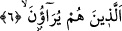

İbn Mes‘ûd (r.a.) bu âyet-i kerimedeki “sâhûn” kelimesini “lâhûn”; yâni boş şeyle
uğraşan şeklinde okumuştur. Akıllı kimse, mi‘râc ve münâcât kabîlinden olan namazı
terketmez, namazda saçıyla, sakalıyla ve elbisesiyle oynamaz, fazla esnemez, sağa sola
dönmez vb… Namaz kılanlar içinde kaç rekât kıldığını ve hangi sûreyi okuduğunu
bilmeyen kimseler var, çok yazık.
6. Onlar gösteriş yapanlardır;
Onlar amellerini insanlara gösteriyorlar ta insanlar da onların namazlarına övgülerini
göstersinler diye...
Burada şöyle bir soru gündeme gelebilir: “Âyete böyle bir mânâ verilirse “hakîkat”
ile “mecâz” bir arada kullanılmış olur. Çünkü övme gözle görülmez?” Derim ki: Bu
ifâdede umûmî bir mecâz vardır. Ya da “İrâe: gösterme” fiili, “rü’yet” kökünden
“ma‘rifet: bilmek” mânâsına alınmıştır.
Keşşâf’da deniyor ki: Sâlih amel şâyet farz ise, farzların i‘lân edilmesi, herkesin gözü
önünde yapılması ve teşhîr edilmesi uygundur. Nitekim Peygamber Efendimiz (s.a.),
“Farzlar gizli yapılmaz.” buyurmuştur.[235] Çünkü onlar İslâm’ın alâmetleri ve dînin
şiârları/sembolleridir. Çünkü farzları terkeden, kınanmayı ve Allah Teâlâ’nın gazabını
hak eder. Şu hâlde farzları açıktan açığa işleyerek töhmetten kurtulmak gerekir. Buna
karşılık yapılan amel nâfile ise, bunun da gizlenmesi gerekir. Çünkü bu çeşit ameller;
yapmayan kişinin kınanmayacağı amellerdir ve gizli yapılmasında her hangi bir töhmet
de yoktur. Eğer kişi bu çeşit ameli, insanlar da görüp kendisi gibi yapsınlar kasdı ile
açıktan işliyorsa bu da güzel olur. Çünkü “riyâ” ancak, insanlar yapılan ameli görsünler
de kendisini övsünler diye yapılırsa tahakkuk eder.
Riyâdan kaçınmak zordur. Zirâ riyâ, karanlık bir gecede kapkara bir karıncanın
kapkara bir taş üzerinde yürümesinden daha gizlidir.
İnsanlar görsün diye uzunca edâ ettiğin namaz,
Bil ki Cehennem kapısının anahtarıdır.
Mürâî/gösteriş yapanla münâfık arasındaki fark şudur: Münâfık, kâfirliğini gizler,
dıştan dışa kendisini mü’min gibi gösterir. Mürâî ise, kendisini dıştan dışa daha fazla
huşû duyan bir kişi imiş gibi gösterir, sâlih insanmış havâsını verir, ki kendisini
görenler sâlih kimselerden olduğunu zannetsinler... Riyâ’nın hakîkati, ibâdet aracılığı ile
dünyalık taleb etmek demektir.
Bu âyette, amellerini ve ahvâlini kendi zulmânî nefsine izâfe eden kimsenin mürâî
olduğuna işâret edilmektedir.